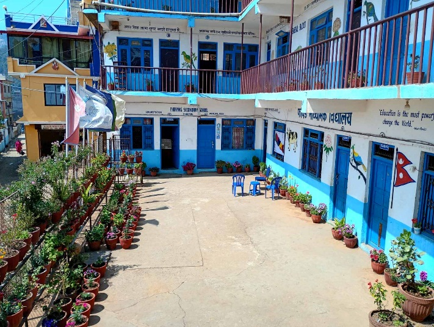

Our Story
Enhancing Education Since 1976 B.S.
Pharping Secondary School was established in 1976 B.S. as a modern and dynamic education centre, situated in the heart of historical Pharping Bazaar, next to Panjal Ganesh in Dakshinkali-06, Kathmandu.
The school currently educates approximately 592 students, of whom 100 students are enrolled in the flagship Civil Engineering (Grade 9–12) technical-vocational stream — a government-designed program to produce skilled, job-ready engineers.
Six batches have completed the Civil Engineering program, with three appearing in the +2 board examination and achieving a 100% pass rate.

Established
Founded as a modern education centre in Pharping Bazaar, Kathmandu.
Technical Stream
Government-recognized Civil Engineering for Grade 9–12 students.
Board Results
Three batches with 100% pass rate in the NEB +2 board examination.
Students Today
592 students studying in a friendly, cooperative environment.
Our Purpose
Goals & Objectives
Our Mission
The main aim of this institution is to provide quality education and declare our area as the educational village. We provide both practical and applicable knowledge to every student.
Our Vision
To be Nepal's leading technical secondary school — producing skilled, confident, and globally competitive engineers who contribute to society and drive economic development.
Technical Focus
Civil Engineering as a technical and vocational stream developed by government provides skills that help students sustain and grow economically through self-employment or career growth.
Pedagogy
Teaching & Evaluation System
Civil Engineering (9–12) is a technical and vocational stream, so courses are designed considering both theoretical and practical aspects — Theoretical: 50% | Practical: 50%.
A professional, integrated, modern approach is applied. A continuous year-round cycle of Teaching → Practical → Evaluation → Feedback → Reinforcement forms the core methodology, while practical work includes lab performances as well as On-the-Job Training (OJT).
Awarding and scholarships are provided to students on the basis of merits and achievements to encourage academic excellence and professional competence.
Year-Round Learning Cycle
Leadership
Messages from Our Leaders
"It is my extreme pleasure to notify all that we have been running the 6th batch of Civil Engineering (9-12) in Pharping Secondary School with 100% passed record. It's the most suitable place for studying with a friendly and co-operative environment. Our success of previous batches has encouraged us to set further enhancement in teaching/practical methodology and achieve more progress and success. The students who have succeeded and involved in different careers are the proofs of our success. Finally, I'd like to request all the parents, academic personalities and students to visit our school if you have any queries about Civil Engineering (9-12) and your children's further study."
"Welcome to the Department of Civil Engineering (9–12). Our program is designed to develop skilled and responsible future engineers by combining strong technical knowledge with practical learning. Students receive hands-on training in AutoCAD, design concepts, and construction supervision skills, preparing them for real construction environments. With real-world oriented teaching and practical exposure, we aim to equip our students with the competence and confidence needed for higher studies as well as job opportunities in the engineering field. We warmly invite students and parents to join us in building a strong foundation for a successful future in civil engineering."